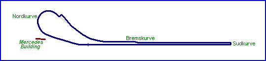
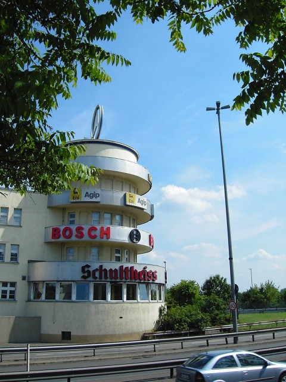
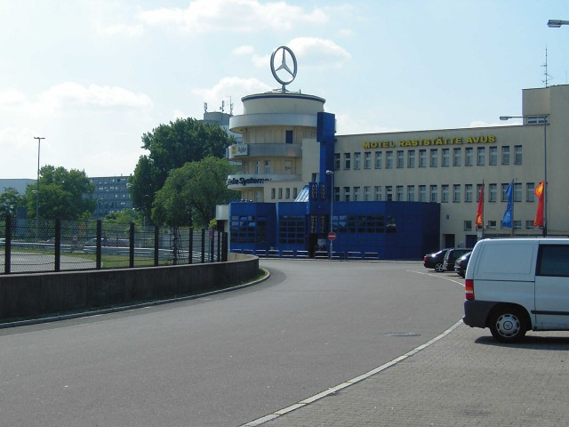
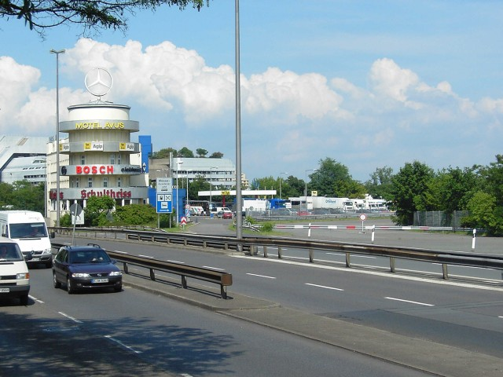
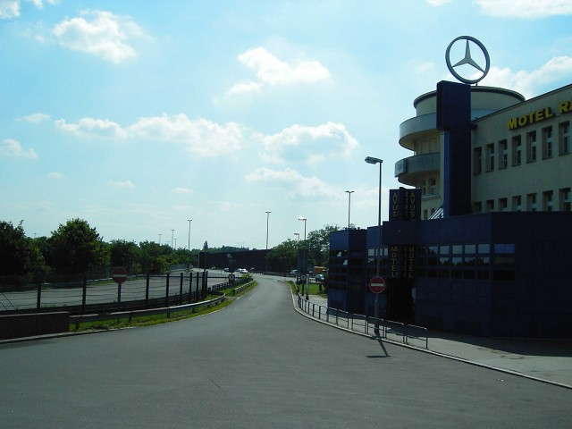
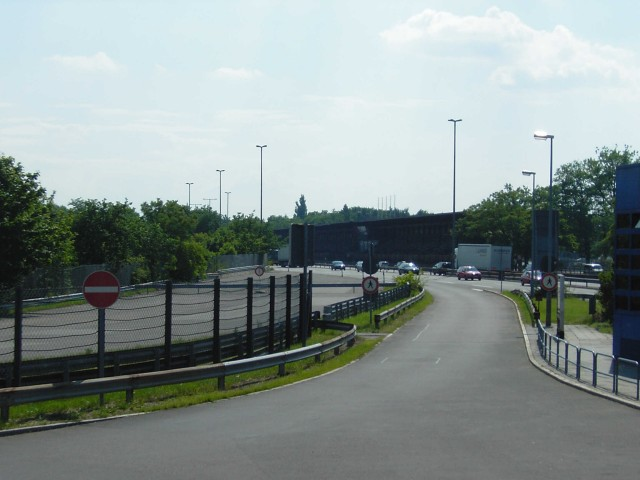
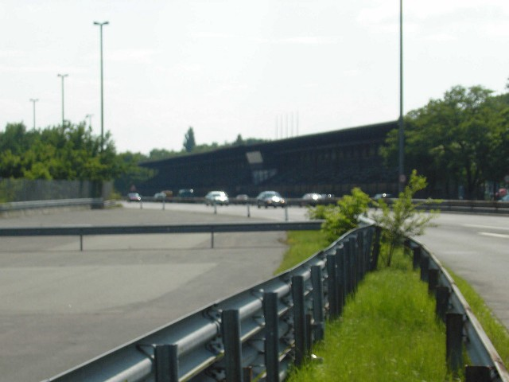
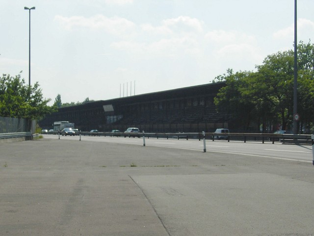

08 - The Mercedes building
|| Contents || Nordkurve | Mercedes Building | Grandstands & Autobahn || Home ||

Numbers on the map represent the location where the photographs were taken. Click
hyperlinks above to view the photographs.
08 - The Mercedes building

09 - The Mercedes building, autobahn side

10 - The Mercedes building, from the outside
of the Nordkurve

11 - Looking back at the Mercedes building
and the exit of the Nordkurve

12A - The exit of the Nordkurve, from
alonside the Mercedes building...

12B - ...Further along from the previous
photo...

12C - ...Further along from the previous
photo...

12D - ...Further along from the previous
photo
| << PREVIOUS PAGE |
Return to racingcircuits.net's Photo Archive Main Index
©2005 Sebastian Klemm. Reproduced here with kind permission.